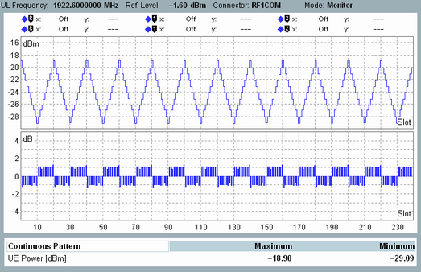

In monitor mode, the result view displays two diagrams and a table with statistical results.

The diagram displays the transmitter output power of the UE. It is measured in a bandwidth of at least (1+α) times the chip rate, where α is the roll-off factor of the WCDMA channel filter. The values correspond to the mean power defined in 3GPP TS 34.121.
The diagram displays one measurement result per slot. Each result is calculated as the average of all samples in the slot, excluding a 25 µs guard period at the beginning and at the end of the slot.
The measured range of slots is configurable, see "Monitor > Measurement Length".
The bar graph in the lower diagram displays the power steps between the slots in the upper diagram. One value per slot boundary is displayed, indicating the difference between the UE power of the previous slot and the UE power of the next slot.
The table displays the maximum and minimum value of the upper diagram, i.e. of the measured UE power vs slot values.
For query of the results via remote control, see "Measurement Results".